What I see different
Live render (left or top) against the wireframe (right or underneath). Nothing here is a fault; each item was either asked for in the brief or written down by F.
- General page. The "Later: notifications, confirm before quitting, …" line from the mock-up is not in the window. It is a note about future work.
- General page. The "+ New Profile…" link at the bottom of the sidebar is not in the window. The brief says to leave it out until profiles arrive (delivery 2).
- General page. The dark half of the System swatch and the Dark swatch are a neutral near-black. The mock-up draws a purple-grey. The window reuses the terminal's own dark colour instead of adding a new one.
- Default page. The "8" and "32" tick labels under the slider are not shown. The brief does not ask for them.
- Default page. No "Used by N panes" line, no override dot, no "Reset" link, no tick for Default's value on the slider and no "…" menu. Those belong to delivery 2. Default shows only its title, the text-size row and the preview.
- Default page. The preview text looks smaller than in the mock-up because the mock-up shows a profile set to 18 pt; Default is at 11.6 pt.
- Not shown in these images: the real macOS title bar and traffic lights (the window system draws them).
No overlapping, clipped or hidden elements at the normal size (760×560) or the minimum size (640×460), in light or dark.
General page, light, 760×560
Drag the slider: the left part shows the live window, the right part the wireframe (cropped to the window's content and scaled to the same width).
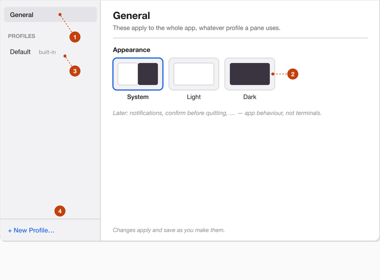
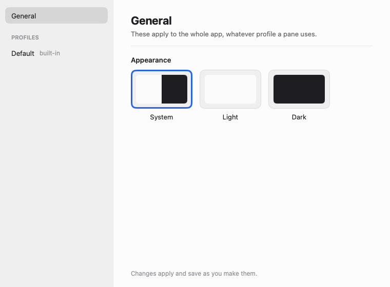
Side by side (live, then wireframe)
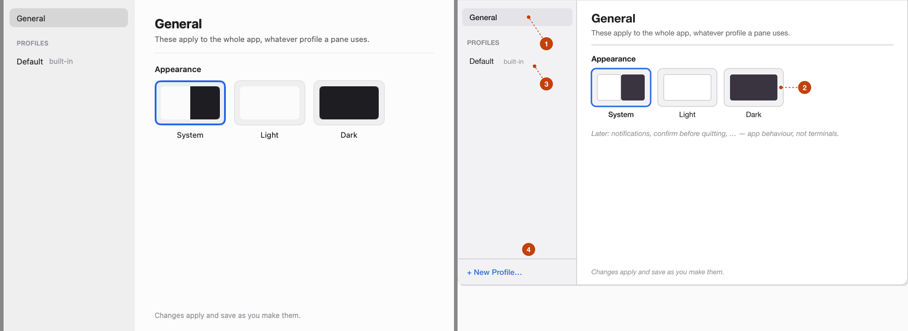
Diff PNG: not produced, see the verdict banner.
Default page, light, 760×560
The wireframe here (number 2) is a profile called "Presenting". Only its text-size row and preview apply to Default.
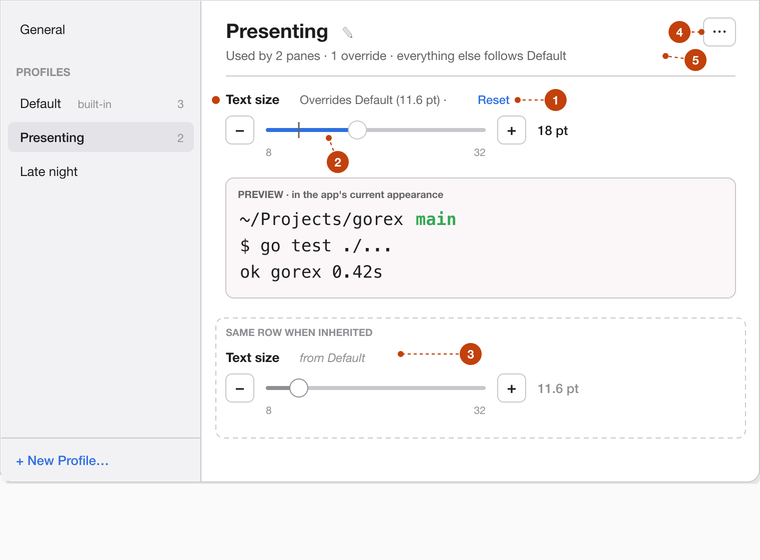
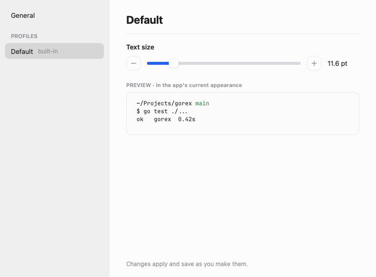
Side by side (live, then wireframe)
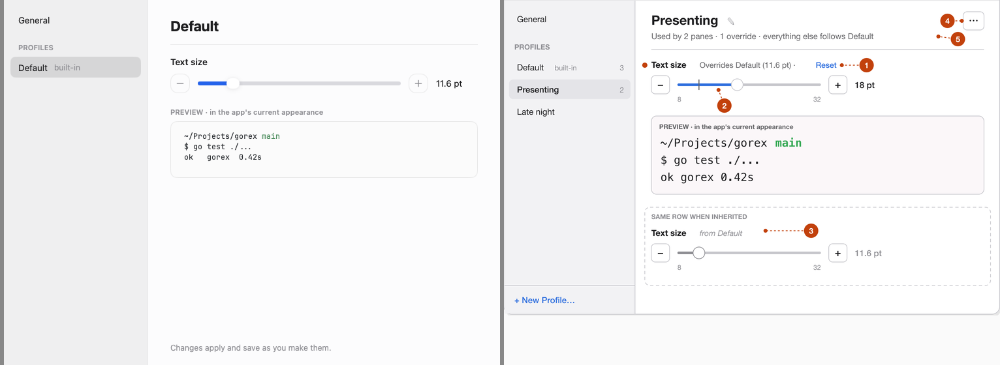
Diff PNG: not produced, see the verdict banner.
Dark appearance, and the minimum window size
There are no wireframes for these, so these are the live renders only. Use them to check legibility.
General, dark, 760×560
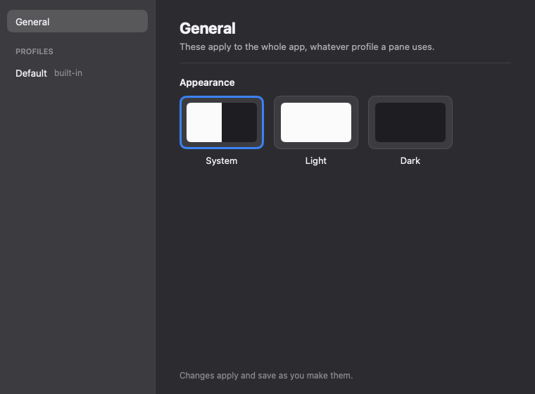
Default, dark, 760×560
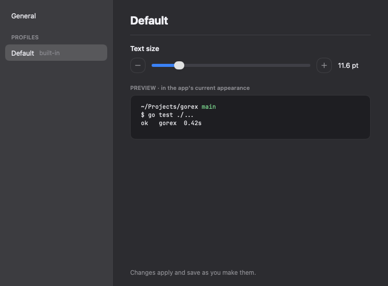
Default, light, 640×460 (the smallest the window can be)
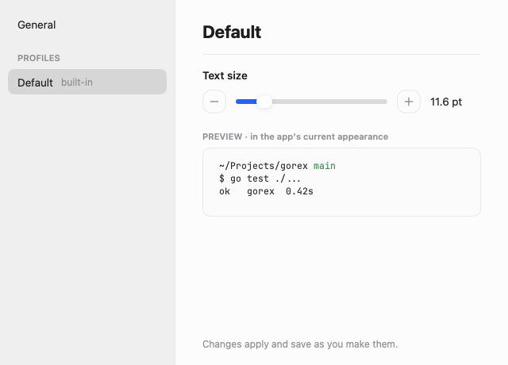
Per-section table
| Section | View | Status | Description | Crop |
|---|---|---|---|---|
| Sidebar | 760, light | MATCH | General, PROFILES heading, Default with "built-in". No "+ New Profile…", as the brief says. | 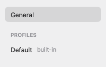 |
| Appearance choices | 760, light | MATCH | Three swatches with names; System has the blue ring on first launch. The dark shade is a neutral near-black. | 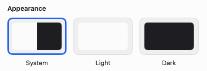 |
| Footer | 760, light | MATCH | "Changes apply and save as you make them." at the bottom. | 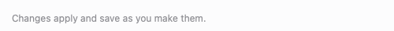 |
| Text size row | 760, light | MATCH | Minus, slider, plus and "11.6 pt". The 8 and 32 labels are not shown; the brief does not ask for them. | 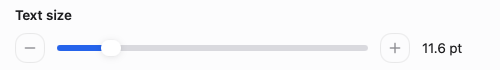 |
| Live preview | 760, light | MATCH | Three lines of terminal text in the current appearance, at the chosen size. | 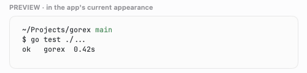 |
The crops are cut from the live renders. The wireframes are not pixel references, so there is no red-overlay diff to crop from.
Sub-issue recommendations
None: the verdict is PASS. Items for U to walk live, and small follow-ups, are listed under "Advisory notes" in handoff-S.md. In short: the Dock reopen with only Settings open, Windows keys, the palette's "Settings…" and the real look of the selection ring; and, later, a role and selected state on the sidebar entries.